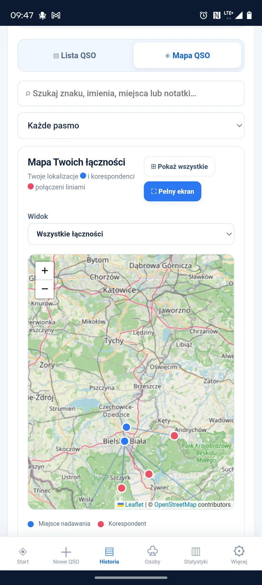
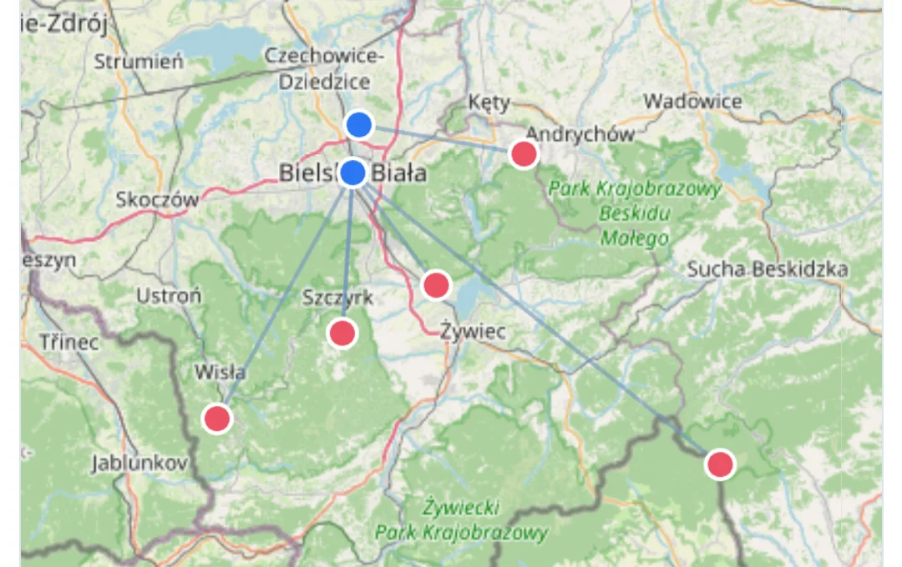
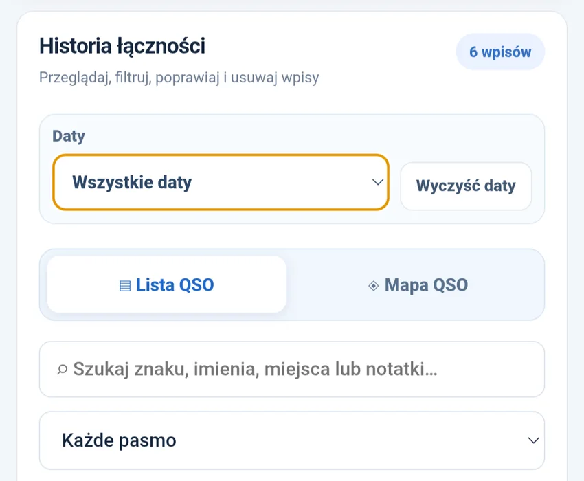
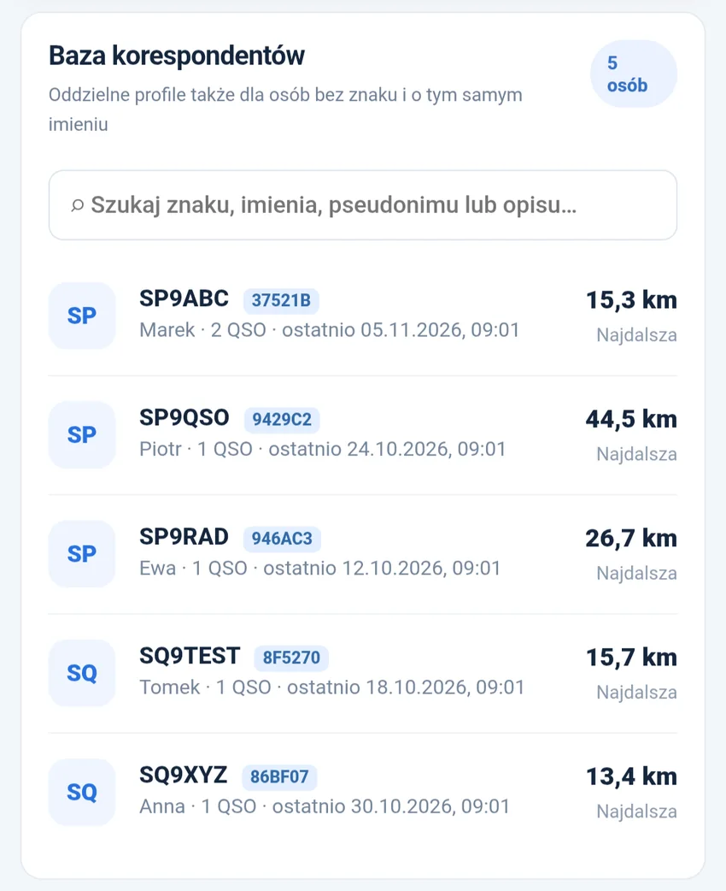
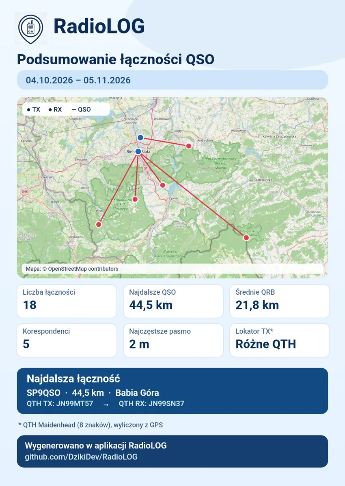

01 / SZUKAJ
Odnajdź każde QSO
Szukaj po znaku wywoławczym, imieniu, miejscu lub notatce. Filtruj historię według daty i pasma.
RadioLOG pomaga zapisywać łączności radiowe i odnajdywać je po czasie. Przeszukuj historię, wracaj do korespondentów i zobacz swoje QSO na mapie. Prosto, bez reklam i bez zbędnego zakładania konta.


Wszystko zaczęło się od zwykłych wypadów z radiem w teren. Czasem w góry, czasem do lasu, a czasem po prostu w jakieś ciekawe miejsce — żeby sprawdzić, z kim uda się nawiązać łączność i jak daleko doleci sygnał.
Po takich wyjściach zostawały mi notatki na kartkach. Lubię tradycyjny dziennik, ale z czasem coraz częściej chciałem wrócić do konkretnej rozmowy: przypomnieć sobie korespondenta, miejsce nadawania albo odległość. Przeszukiwanie zapisków bywało zwyczajnie niewygodne.
Rozglądałem się za aplikacją, w której wpiszę kilka liter i od razu odnajdę potrzebne QSO. Nic nie pasowało mi jednak do końca. W pewnym momencie pomyślałem: „A może spróbuję zrobić coś własnego?” 🙂
Na początku RadioLOG miał być tylko prostym elektronicznym notatnikiem. Kiedy zacząłem z niego korzystać, pojawiły się kolejne potrzeby. Najpierw wygodne wyszukiwanie zapisanych łączności i korespondentów — bo przecież po to prowadzi się historię, żeby można było później łatwo do niej wrócić.
Potem przyszła kolej na lokalizacje. Skoro zapisuję, skąd nadawałem i gdzie był rozmówca, to czemu nie pokazać obu miejsc na mapie i automatycznie nie policzyć odległości? Tak doszły mapa QSO, QRB, a później również GPS, statystyki, kopie zapasowe i graficzne podsumowania łączności.
Nie oznacza to wcale rezygnacji z kartki i długopisu. Sam lubię notować w terenie. RadioLOG pozwala później spokojnie przepisać QSO z właściwą datą i godziną — a kiedy trzeba coś znaleźć, wyszukiwarka i mapa są już pod ręką.
W końcu pomyślałem, że skoro to narzędzie pomaga mnie, może przyda się też innym. Dlatego udostępniłem je za darmo, bez reklam i płatnych funkcji. Nie stoi za nim firma ani wielki zespół — to mój prywatny projekt rozwijany w wolnym czasie.

To, co najcenniejsze w dzienniku łączności, staje się łatwe do odnalezienia — nawet po wielu miesiącach.
Szukaj po znaku wywoławczym, imieniu, miejscu lub notatce. Filtruj historię według daty i pasma.
Sprawdzaj miejsca nadawania i korespondentów oraz odległości między stacjami w linii prostej.

Przeglądaj profile rozmówców i ich wcześniejsze łączności — bez przekopywania kolejnych stron notesu.
Nie musisz rezygnować ze swojego sposobu notowania. W terenie zapisuj łączności na papierze, a później — choćby wieczorem w domu — dodaj je do RadioLOG, ustawiając prawdziwą datę i godzinę QSO.
RadioLOG nie odbiera przyjemności z pracy przez radio. Po prostu ułatwia odnalezienie rozmówcy, kiedy będziesz chciał wrócić do dawnej łączności.
Papierowy dziennik może zostać. Wygodna wyszukiwarka i mapa będą jego uzupełnieniem.05.11.2026 — 09:23
2 m / FM
Bielsko-Biała → Żywiec
RST 59 / 59
Zapisać później w RadioLOG ✓

Po lewej widzisz przykładową grafikę wygenerowaną przez RadioLOG — mapę łączności, statystyki, odległości i lokatory QTH zebrane w jednym obrazie.
Możesz wybrać konkretny dzień, zakres dat lub całą historię, a następnie zapisać gotową grafikę PNG albo wygodnie udostępnić ją np. na Facebooku. To świetny sposób, aby pokazać swoje radiowe osiągnięcia.
Przed udostępnieniem sprawdź, czy punkty na mapie nie zdradzają lokalizacji, których nie chcesz publikować.
Bez makiet udających aplikację. Poniżej znajdziesz rzeczywiste zrzuty ekranów — kliknij, aby je powiększyć. Przedstawione QSO mają charakter przykładowy.
2 m, 70 cm, CB i PMR 446 — zapisuj kontakty niezależnie od sposobu prowadzenia łączności.
Prosta ściąga wyjaśnia skróty QSO, TX/RX, QRB oraz podstawowe pojęcia radiowe.
Dodaj dane demonstracyjne, aby zobaczyć historię, korespondentów, mapę i statystyki.
RadioLOG jest i pozostaje darmowy, bez reklam i obowiązkowych opłat. Jeśli chcesz docenić czas poświęcony na jego rozwój, możesz dobrowolnie wesprzeć projekt. Każda kawa jest miłym gestem — nie jest wymagana do korzystania z aplikacji.
Prowadzisz kanał na YouTube, stronę, grupę na Facebooku, vloga lub inną inicjatywę poświęconą CB, PMR, krótkofalarstwu czy radiotelefonom? Możemy wzajemnie polecać sobie nasze projekty i docierać do ludzi, którzy podzielają tę samą pasję.
Nie szukam sponsorów ani płatnych reklam. Chodzi o prostą, uczciwą współpracę: polecanie wartościowych kanałów, stron i inicjatyw, a przy okazji pokazanie ich odbiorcom darmowej aplikacji RadioLOG.
Przedstaw się i napisz, czym się zajmujesz. Odpowiem osobiście.
Lista będzie uzupełniana po uzgodnieniu współpracy z kolejnymi inicjatywami. Jeśli prowadzisz projekt o tematyce radiowej, być może właśnie od Ciebie zaczniemy!
Twoje uwagi pomagają rozwijać aplikację. Opisz pomysł na nową funkcję, zgłoś problem albo napisz bezpośrednio do autora.
Aplikacja jest bezpłatna i dostępna jako plik APK na GitHub. Na stronie wydań znajdziesz najnowszą opublikowaną wersję.
Nie. RadioLOG działa bez obowiązkowego logowania. Dane QSO są zapisywane lokalnie na urządzeniu.
Nie. Do wyświetlania mapy potrzebne jest połączenie z internetem. Same wpisy QSO przechowywane są lokalnie.
Nie musi. Możesz najpierw zanotować QSO na kartce, a dopiero później wprowadzić je do aplikacji z właściwą datą i godziną.
Projekt ma repozytorium na GitHub. Możesz już teraz wysłać zgłoszenie błędu lub pomysłu albo skorzystać z formularza kontaktowego.